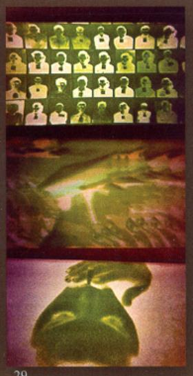
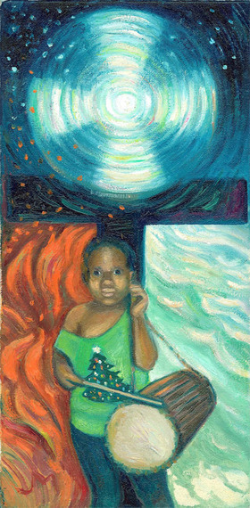

Below are some paintings by Joni Mitchell
Painting used by the Music for Youth Foundation for their Tribute to Joni Mitchell event at Carnegie Hall on February 1, 2006. Most likely painted by Joni from a Henry Diltz photograph.
This painting featured on the CD of 'Taming The Tiger'. The original was stolen after the exhibition Joni Mitchell premiered at LACE in Los Angeles and we haven't heard as to whether it was ever recovered or not
Love is All Love, 1966, watercolor.
Clouds, 1969, Gouache.
Green Flag Song 29, 2006, Mixed Media on Canvas.
War Child, 2005
All media and info on page from http://jonimitchell.com/